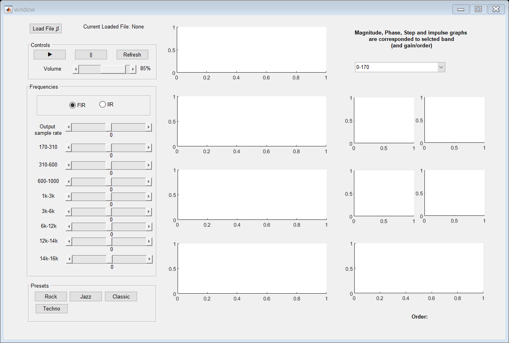

function varargout = window(varargin)
gui_Singleton = 1;
gui_State = struct('gui_Name', mfilename, ...
'gui_Singleton', gui_Singleton, ...
'gui_OpeningFcn', @window_OpeningFcn, ...
'gui_OutputFcn', @window_OutputFcn, ...
'gui_LayoutFcn', [] , ...
'gui_Callback', []);
if nargin && ischar(varargin{1})
gui_State.gui_Callback = str2func(varargin{1});
end
if nargout
[varargout{1:nargout}] = gui_mainfcn(gui_State, varargin{:});
else
gui_mainfcn(gui_State, varargin{:});
end
function window_OpeningFcn(hObject, eventdata, handles, varargin)
handles.output = hObject;
guidata(hObject, handles);
global volume filterType selectedBand userSampleRate;
selectedBand = 1;
volume = 85;
filterType = 'FIR';
userSampleRate = 0;
refreshFrequencyValues(hObject, 0, handles);
function varargout = window_OutputFcn(hObject, ~, handles)
varargout{1} = handles.output;
function [y, num, den] = applyFIR(wn, bandType, gain, signalY)
num = fir1(50, wn, bandType);
den = 1;
yFiltered = filter(num, 1, signalY);
y=gain*yFiltered;
function [y, num, den, N] = applyIIR(wn, bandType, gain, signalY)
if (strcmp(bandType,'bandpass'))
[N, ~] = cheb2ord(wn(1),wn(2),1,10);
else
N = 7;
end
[num, den] = cheby1(N, 0.5, wn, bandType);
yFiltered = filter(num, den, signalY);
y = gain * yFiltered;
function applyEqualizer(handles)
global audioPathName selectedBand fs userSampleRate;
[handles.y, Fsload] = audioread(audioPathName);
bandpasses = [170 310 600 1000 3000 6000 12000 14000 16000];
if (Fsload <= bandpasses(end)*2)
fs = bandpasses(end)*2 + 2000;
else
fs = Fsload;
end
if (userSampleRate == 0)
userSampleRate = fs;
end
handles.y = resample(handles.y, fs, Fsload);
values = getSliderValues(handles);
totalY = 0;
for i=1:length(bandpasses)
currentValue = bandpasses(i);
currentGain = values(i);
currentGain = db2mag(currentGain);
bandType = 'bandpass';
if (i>1)
previousValue = bandpasses(i-1)+1;
wn = [previousValue/(fs/2) currentValue/(fs/2)];
else
bandType = 'low';
wn = currentValue/(fs/2);
end
if (get(handles.firRadio, 'Value'))
[y, num, den] = applyFIR(wn, bandType, currentGain, handles.y);
N = 50;
else
[y, num, den, N] = applyIIR(wn, bandType, currentGain, handles.y);
end
if (i == selectedBand)
plotMagnitudePhase(num, den, handles.magAxes, handles.phaseAxes);
plotStepImpulse(num, den, handles.impAxes, handles.stepAxes);
plotPolesZeros(num, den, handles.polesZeros)
set(handles.orderLabel, 'String', strcat('Order: ', int2str(N)));
end
totalY = totalY + y;
end
totalY = resample(totalY, userSampleRate, fs);
plotTD(handles.y, handles.timeDY, 'Input Signal (Time Domain)');
plotTD(totalY, handles.timeDYF, 'Filtered Signal (Time Domain)');
plotFD(fs, handles.y, handles.timeFY, 'Input Signal (Frequency Domain)');
plotFD(fs, totalY, handles.timeFYF, 'Filtered Signal (Frequency Domain)');
global audioPlayer volume;
audioPlayer = audioplayer(totalY*(volume/100), fs);
function loadFileButton_Callback(hObject, ~, handles)
global audioPathName userSampleRate;
userSampleRate = 0;
[fileName, pathName]=uigetfile({'*.wav'} , 'File Selector');
audioPathName = strcat(pathName , fileName);
set(handles.loadedFileLabel, 'String' , strcat('Current Loaded File: ', fileName));
applyEqualizer(handles);
initializeSampleRate(handles);
function initializeSampleRate(handles)
global userSampleRate fs;
userSampleRate = fs;
set(handles.sampleRateSlider, 'min', fs/2);
set(handles.sampleRateSlider, 'max', fs*2);
set(handles.sampleRateSlider, 'value', fs);
set(handles.lv_sampleRate, 'String', userSampleRate);
function pauseButton_Callback(hObject, ~, handles)
global audioPlayer;
applyEqualizer(handles);
pause(audioPlayer);
function resumeButton_Callback(hObject, ~, handles)
global audioPlayer;
applyEqualizer(handles);
play(audioPlayer);
function refreshButton_Callback(hObject, ~, handles)
global audioPlayer;
currentTime = audioPlayer.CurrentSample;
pause(audioPlayer);
applyEqualizer(handles);
play(audioPlayer, ceil(currentTime));
function volumeSlider_Callback(hObject, eventdata, handles)
global volume;
volume = get(handles.volumeSlider, 'value');
set(handles.volumeLabel, 'String', volume);
function slidersCreate(hObject, ~, handles)
if isequal(get(hObject,'BackgroundColor'), get(0,'defaultUicontrolBackgroundColor'))
set(hObject,'BackgroundColor',[.9 .9 .9]);
end
function x = getSliderValues(handles)
x = [get(handles.slider_170, 'value') get(handles.slider_310, 'value') get(handles.slider_600, 'value') get(handles.slider_1k, 'value') get(handles.slider_3k, 'value') get(handles.slider_6k, 'value') get(handles.slider_12k, 'value') get(handles.slider_14k, 'value') get(handles.slider_16k, 'value')];
function refreshFrequencyValues(hObject, ~, handles)
sliderValues = getSliderValues(handles);
set(handles.lv_170, 'String', sliderValues(1));
set(handles.lv_310, 'String', sliderValues(2));
set(handles.lv_600, 'String', sliderValues(3));
set(handles.lv_1k, 'String', sliderValues(4));
set(handles.lv_3k, 'String', sliderValues(5));
set(handles.lv_6k, 'String', sliderValues(6));
set(handles.lv_12k, 'String', sliderValues(7));
set(handles.lv_14k, 'String', sliderValues(8));
set(handles.lv_16k, 'String', sliderValues(9));
function loadPreset(handles, v_170, v_310, v_600, v_1k, v_3k, v_6k, v_12k, v_14k, v_16k)
set(handles.slider_170, 'value', v_170);
set(handles.slider_310, 'value', v_310);
set(handles.slider_600, 'value', v_600);
set(handles.slider_1k, 'value', v_1k);
set(handles.slider_3k, 'value', v_3k);
set(handles.slider_6k, 'value', v_6k);
set(handles.slider_12k, 'value', v_12k);
set(handles.slider_14k, 'value', v_14k);
set(handles.slider_16k, 'value', v_16k);
refreshFrequencyValues(0, 0, handles);
function rockButton_Callback(hObject, ~, handles)
loadPreset(handles, 1, 2, 3, 4, 5, 6, 7, 8, 9)
function jazzButton_Callback(hObject, ~, handles)
loadPreset(handles, -1, -2, -3, -4, -5, -6, -7, -8, -9)
function classicButton_Callback(hObject, ~, handles)
loadPreset(handles, 5, 8, 1, 3, 6, 6, -20, 20, 15.225)
function techoButton_Callback(hObject, ~, handles)
loadPreset(handles, 0, 0, 0, 0, 0, 0, 0, 0, 0)
function plotTD(y, axesObject, plotTitle)
t = linspace(0,50,length(y));
axes(axesObject);
plot(t,y); title(plotTitle);
function plotFD(Fs, y, axesObject, plotTitle)
Y = fftshift(fft(y));
F = linspace(-Fs/2,Fs/2,length(y));
axes(axesObject);
plot(F,real(Y)); title(plotTitle);
function plotMagnitudePhase(numerator, denominator, magAxes, phaseAxes)
[H,w] = freqz(numerator, denominator);
magnitude = abs(H);
phase = angle(H);
axes(magAxes);
plot(w,magnitude); title('Magnitude');
axes(phaseAxes);
plot(w,phase); title('Phase');
function plotStepImpulse(numerator, denominator, impAxes, stepAxes)
axes(impAxes);
plot(impz(numerator, denominator)); title('Impulse Response');
axes(stepAxes);
plot(stepz(numerator, denominator)); title('Step Response');
function plotPolesZeros(numerator, denominator, polesAxes)
z = roots(numerator);
p = roots(denominator);
axes(polesAxes);
zplane(z,p); title('Pole-Zero Plot');
function bandMenu_Callback(hObject, eventdata, handles)
global selectedBand;
selectedBand = get(hObject,'Value');
applyEqualizer(handles);
function bandMenu_CreateFcn(hObject, eventdata, handles)
if ispc && isequal(get(hObject,'BackgroundColor'), get(0,'defaultUicontrolBackgroundColor'))
set(hObject,'BackgroundColor','white');
end
function sampleRateSlider_Callback(hObject, eventdata, handles)
global userSampleRate;
userSampleRate = ceil(get(hObject, 'value'));
set(handles.lv_sampleRate, 'String', userSampleRate);
